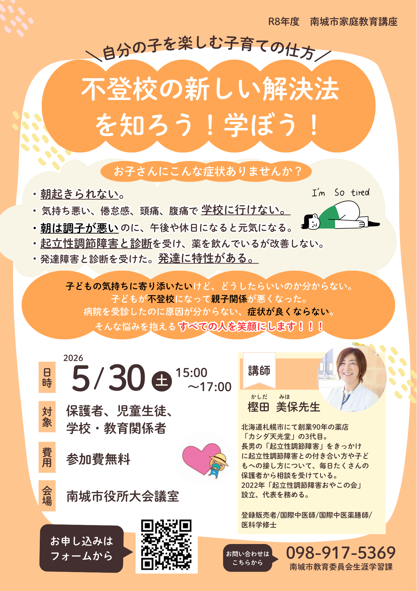

画像をクリックすると、元の大きな画像を表示できます。
子育ての悩みに関する学びの機会のご紹介です
子どもの体調や学校生活、親子関係のことなど、子育ての中で向き合う悩みについて、外部の講座情報をひとつご紹介します。
CoderDojo南城の主催イベントではありませんが、「こういう情報提供の機会もある」という参考情報として共有します。
講座概要
- 講座名: 南城市家庭教育講座「不登校の解決方法を知ろう！学ぼう！」
- 内容: 起立性調節障害に関する専門家の講話
- 日時: 2026年5月30日（土）15:00〜17:00
- 会場: 南城市役所 大会議室
- 費用: 無料
どんな内容か
講師は、起立性調節障害のコミュニティを運営している方です。ご自身のお子さまの体験と専門的な知見の両面から、起立性調節障害に起因する不登校や、そこから生じやすい親子関係の悩みについて、解決の糸口を伝える内容とのことです。
同じような悩みを抱えている保護者の方にとって、状況を整理したり、向き合い方を考えたりするきっかけのひとつになるかもしれません。
参考リンク
ご確認ください
参加方法や最新情報は、主催者の案内をご確認ください。内容の詳細や募集状況に変更がある可能性もあるため、参加を検討される際は公式情報をあわせてご覧ください。